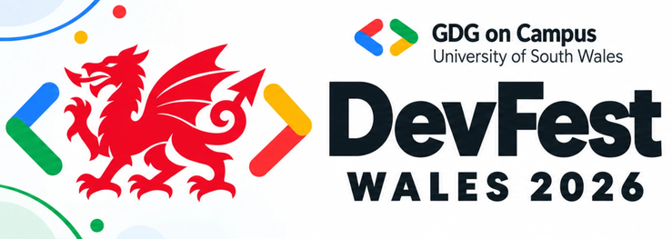

I think we should start by saying… Wow. DevFest has been such an incredible 3-day STEM event, with inspiring talks, connections, curiosity. Each day came with a new topic to discuss. Generative AI was on day 1 (Treforest), cybersecurity on day 2 (Newport) and the transition between academia and industry on day 3 (Cardiff). All of these topics being incredibly useful for the STEM and software industry.
This wasn’t your typical networking event. DevFest gave everyone something to talk about while networking, as well as something to research and learn more on in the near future. For example, one of the speakers for day 1, Chuka Ofili taught us about how knowledge graphs can help you better utilise tools such as Gemini, and challenged us to create and share a knowledge graph of any topic.
It brought students, people from industry and people in STEM together to connect and learn from each other, it really kept the mood lively and the energy high. Not only that, but it gave the students who attended insight into what development looks like in practise and in the industry/workplace.
The speakers were definitely the highlight of DevFest. Their speeches were highly resourceful, and even gave us all a chuckle. The event aimed to strike a balance between being professional and enjoying yourself along the journey, and it met that aim incredibly well.
Some of the talks included;
As well as this, the event also had a raffle and mystery bags, which made the experience much more entertaining. Even if you didn’t get anything from the raffle, you still got some nice freebies, including small notebooks, styli, key chains and more.
Here's what some of our participants and guest speakers had to say about DevFest Wales 2026.
I think we can safely say DevFest Wales 2026 was a successful event! A massive thank you to the event organisers, the GDG on Campus team and the staff advisors on making it an event to remember.
Want to be updated about more events like this in the future? Check out the Google Developer Group for USW here!
Written by Jessica Davies